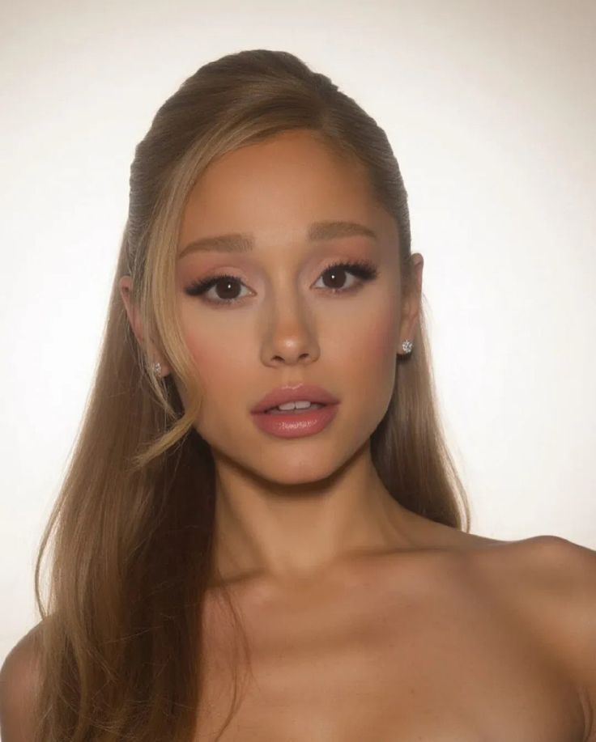
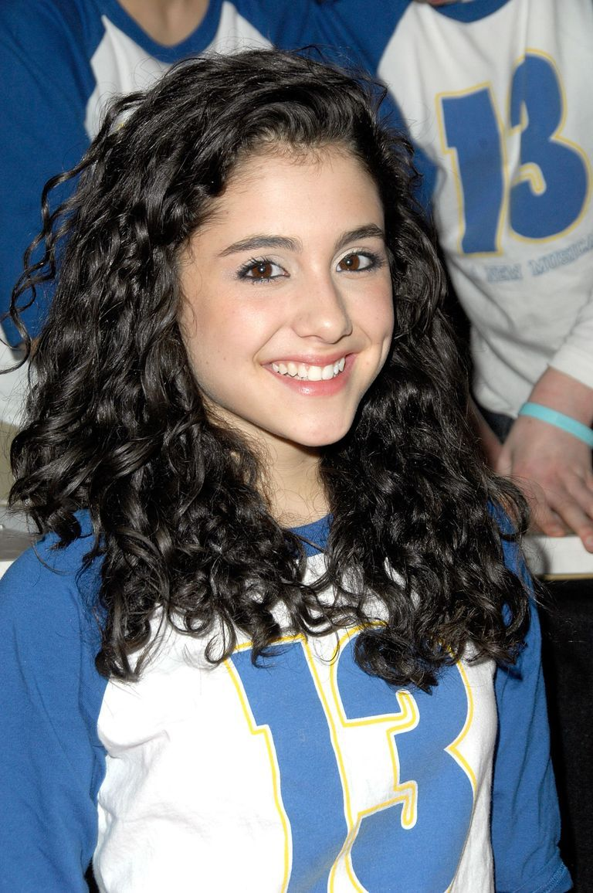

YoutubeAriana Grande-Butera é uma cantora, compositora e atriz norte-americana, reconhecida mundialmente por sua voz marcante, seu alcance vocal de aproximadamente quatro oitavas e sua influência na música pop contemporânea. Ela começou sua carreira no teatro musical, ganhou fama na televisão e, posteriormente, tornou-se uma das artistas mais populares de sua geração. Também conquistou reconhecimento no cinema, especialmente por interpretar Glinda na adaptação cinematográfica do musical Wicked.
Ariana Grande nasceu em 26 de junho de 1993, em Boca Raton, no estado da Flórida, Estados Unidos. Seu nome completo é Ariana Grande-Butera. Ela é filha de Joan Grande, empresária, e Edward Butera, designer gráfico. Também tem um meio-irmão mais velho, Frankie Grande, que trabalha como ator, cantor, dançarino e personalidade televisiva. Desde pequena, Ariana demonstrava interesse pela música, pelo canto e pela atuação. Durante a infância, participou de apresentações teatrais e começou a desenvolver suas habilidades vocais. Aos oito anos, já se apresentava em produções locais e em eventos musicais, demonstrando uma grande paixão pelo palco. Uma de suas primeiras experiências importantes foi interpretar a personagem Annie no musical Annie. Ela também participou de outras produções teatrais, incluindo versões de O Mágico de Oz e A Bela e a Fera. Sua família teve influência importante em sua formação, incentivando suas atividades artísticas desde cedo. Embora tenha crescido na Flórida, Ariana posteriormente precisou viajar para diferentes cidades para participar de audições e projetos profissionais.

A carreira profissional de Ariana começou a ganhar força em 2008, quando ela tinha 15 anos. Naquele ano, participou do musical da Broadway 13, interpretando Charlotte, uma das personagens da produção. O espetáculo foi importante para sua trajetória porque lhe proporcionou experiência profissional no teatro e permitiu que demonstrasse seu talento para o canto e a atuação. A participação em 13 ajudou Ariana a conquistar reconhecimento no meio artístico e abriu portas para oportunidades na televisão. Apesar de ainda ser jovem, ela já demonstrava interesse em construir uma carreira duradoura no entretenimento. Durante esse período, Ariana também continuou estudando e conciliando sua educação com os compromissos profissionais. Posteriormente, sua carreira começou a se expandir para a televisão, onde ela alcançaria grande popularidade.